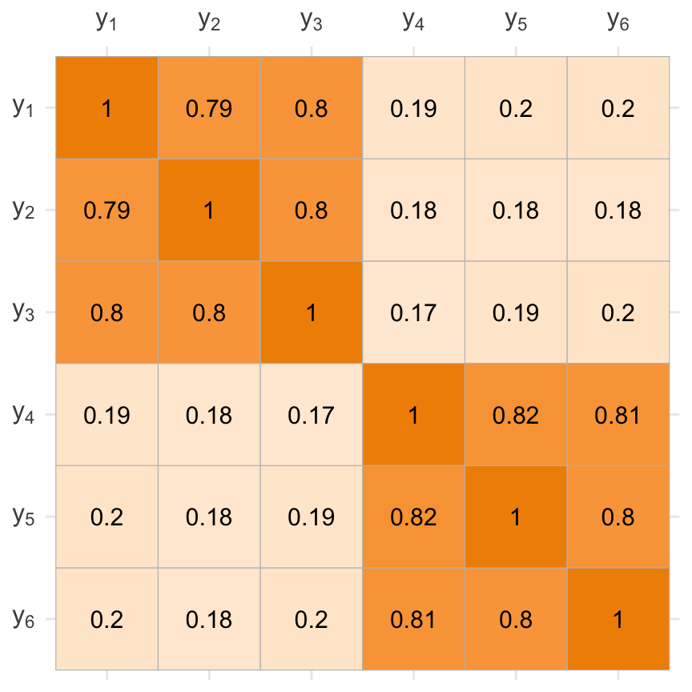
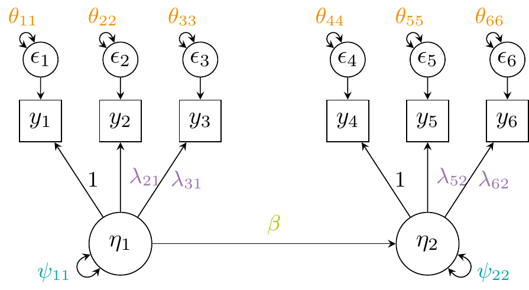
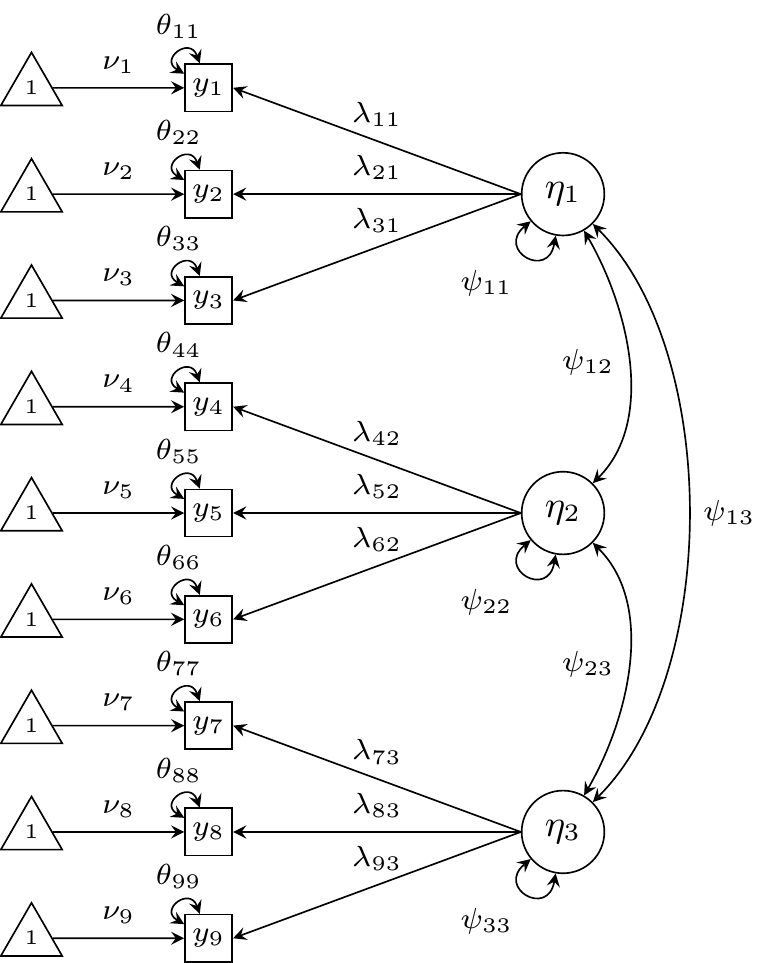
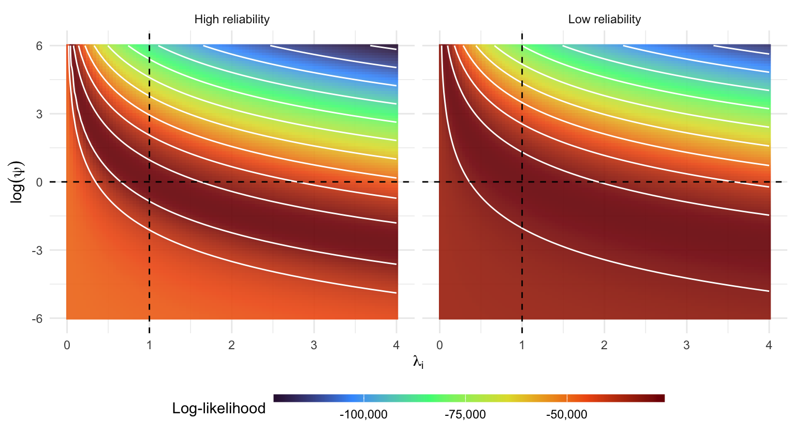
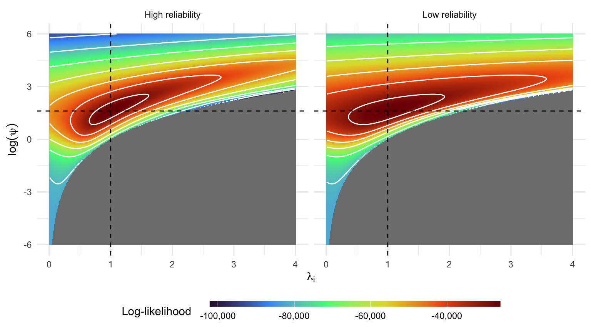
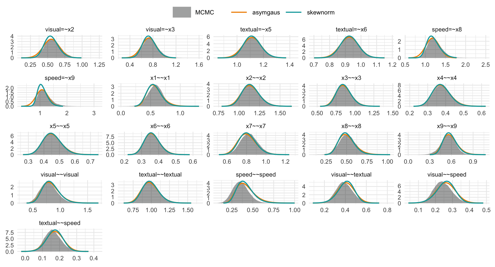
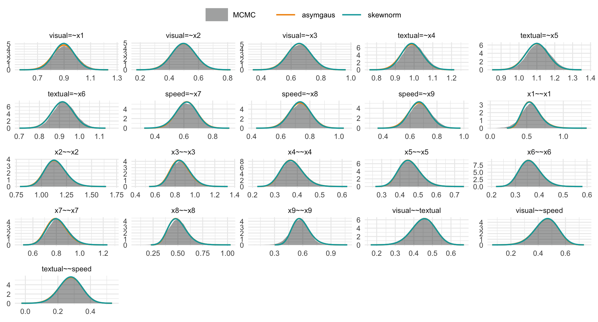

| Indicator | Description | Unit | |
|---|---|---|---|
| \(y_1\) | HbA1c | 3-month avg. blood glucose | % |
| \(y_2\) | FPG | Fasting plasma glucose | mmol/L |
| \(y_3\) | Insulin | Fasting insulin level | µU/mL |
| \(y_4\) | PCr | Plasma creatinine | µmol/L |
| \(y_5\) | ACR | Albumin–creatinine ratio | mg/g |
| \(y_6\) | BUN | Blood urea nitrogen | mmol/L |
SEM Stuff I’m working on right now
Haziq Jamil ![]()
Research Specialist, BAYESCOMP @ CEMSE-KAUST
October 28, 2025
Motivating example
Glycemic control and kidney health
Does poorer glycemic control lead to greater severity of kidney disease?
Observe \(p=6\) variables for each patient:
“casewise” thinking leads to \[ \definecolor{kaustorg}{RGB}{241, 143, 0} \definecolor{kausttur}{RGB}{0, 166, 170} \definecolor{kaustmer}{RGB}{177, 15, 46} \definecolor{kaustgrn}{RGB}{173, 191, 4} \definecolor{kaustblu}{RGB}{82, 132, 196} \definecolor{kaustpur}{RGB}{156, 111, 174} \small \begin{align*} \textcolor{kaustmer}{y_{4}} &= \beta_0^{(4)} + \beta_1^{(4)} \textcolor{kaustblu}{y_{1}} + \beta_2^{(4)} \textcolor{kaustblu}{y_{2}} + \beta_3^{(4)} \textcolor{kaustblu}{y_{3}} + \epsilon^{(4)} \\ \textcolor{kaustmer}{y_{5}} &= \beta_0^{(5)} + \beta_1^{(5)} \textcolor{kaustblu}{y_{1}} + \beta_2^{(5)} \textcolor{kaustblu}{y_{2}} + \beta_3^{(5)} \textcolor{kaustblu}{y_{3}} + \epsilon^{(5)} \\ \textcolor{kaustmer}{y_{6}} &= \beta_0^{(6)} + \beta_1^{(6)} \textcolor{kaustblu}{y_{1}} + \beta_2^{(6)} \textcolor{kaustblu}{y_{2}} + \beta_3^{(6)} \textcolor{kaustblu}{y_{3}} + \epsilon^{(6)} \\ \end{align*} \]
Does not give a clear and direct answer.
Moreover, variables are assumed to be measured without error.
Covariance-based approach
Sample correlation matrix looks like this1:

- The data suggests clustering of variables
- \(y_1\),\(y_2\),\(y_3\) measure glycemic control (\(\texttt{GlyCon}\))
- \(y_4\),\(y_5\),\(y_6\) measure kidney health (\(\texttt{KdnHlt}\))
- There is an element of dimension-reduction; much needed for analysing (correlated) multivariate data.
Easier to hypothesize relationships, e.g. \[ {\color{kaustmer}\texttt{KdnHlt}} = \alpha + \beta \, {\color{kaustblu}\texttt{GlyCon}} + \texttt{error} \]
SEM is about modelling the covariance structure of the data, \[ \boldsymbol\Sigma = \boldsymbol\Sigma(\vartheta). \]
SEM equations
\[ \small \begin{gathered} \begin{pmatrix} y_1 \\ y_2 \\ y_3 \\ y_4 \\ y_5 \\ y_6 \end{pmatrix} = \begin{pmatrix} \textcolor{kaustpur}{\lambda_{11}} & 0 \\ \textcolor{kaustpur}{\lambda_{21}} & 0 \\ \textcolor{kaustpur}{\lambda_{31}} & 0 \\ 0 & \textcolor{kaustpur}{\lambda_{42}} \\ 0 & \textcolor{kaustpur}{\lambda_{52}} \\ 0 & \textcolor{kaustpur}{\lambda_{62}} \\ \end{pmatrix} \begin{pmatrix} \eta_1 \\ \eta_2 \end{pmatrix} + \begin{pmatrix} \epsilon_1 \\ \epsilon_2 \\ \epsilon_3 \\ \epsilon_4 \\ \epsilon_5 \\ \epsilon_6 \end{pmatrix} \\[1em] \begin{pmatrix} \eta_1 \\ \eta_2 \end{pmatrix} = \begin{pmatrix} 0 & 0 \\ {\color{kaustgrn}\beta} & 0 \\ \end{pmatrix} \begin{pmatrix} \eta_1 \\ \eta_2 \end{pmatrix} + \begin{pmatrix} \zeta_1 \\ \zeta_2 \end{pmatrix} \end{gathered} \]
Or, more compactly as
\[ \begin{gathered} \mathbf y = {\color{Gray}\boldsymbol\nu +\,} {\color{kaustpur}\boldsymbol\Lambda} \boldsymbol\eta + \boldsymbol\epsilon \\ \boldsymbol\eta = {\color{Gray}\boldsymbol\alpha +\,} {\color{kaustgrn}\mathbf B} \boldsymbol\eta + \boldsymbol\zeta \end{gathered} \]
with assumptions \(\boldsymbol\epsilon\sim\operatorname{N}_p(\mathbf 0, {\color{kaustorg}\boldsymbol\Theta})\), \(\boldsymbol\zeta\sim\operatorname{N}_q(\mathbf 0, {\color{kausttur}\boldsymbol\Psi})\), and \(\operatorname{cov}(\boldsymbol\epsilon, \boldsymbol\zeta)=\mathbf 0\).

SEM parameters include the free entries of \(\color{Gray}\boldsymbol\nu\), \(\color{kaustpur}\boldsymbol\Lambda\), \(\color{kaustorg}\boldsymbol\Theta\), \(\color{Gray}\boldsymbol\alpha\), \(\color{kaustgrn}\mathbf B\), and \(\color{kausttur}\boldsymbol\Psi\).
Dump all in \(\vartheta \in\mathbb R^m\), where \(m < p(p+1)/2 {\color{Gray} \,+\, p}\).
Sometimes, not interested in mean structure, so \(\color{Gray}\boldsymbol\nu\) and \(\color{Gray}\boldsymbol\alpha\) are dropped.
ML estimation
- It can be shown that the normal SEM reduces to \(\mathbf y\sim \text{N}_p\big(\boldsymbol\mu(\vartheta), \boldsymbol\Sigma(\vartheta)\big)\), where \[ \begin{align} \boldsymbol\mu(\vartheta) &= \boldsymbol\nu + \boldsymbol\Lambda (\mathbf I - \mathbf B)^{-1} \boldsymbol\alpha \\ \boldsymbol\Sigma(\vartheta) &= \underbrace{\boldsymbol\Lambda (\mathbf I - \mathbf B)^{-1} \boldsymbol\Psi (\mathbf I - \mathbf B)^{-\top} \boldsymbol\Lambda^\top}_{\boldsymbol\Sigma^*(\vartheta)} + \boldsymbol\Theta \end{align} \tag{1}\]
- Suppose we observe \(\mathcal Y= \{\mathbf y_1,\dots,\mathbf y_n\}\). ML estimation maximises (up to a constant) the log-likelihood \[
\ell(\vartheta)
= -\frac{n}{2}\Bigl[
\log \bigl|\boldsymbol\Sigma(\vartheta)\bigr|
+ \operatorname{tr} \bigl(\boldsymbol\Sigma(\vartheta)^{-1} \mathbf S\bigr)
{\color{Gray}+ \bigl(\bar {\mathbf y} - \boldsymbol\mu(\vartheta)\bigr)^{\top}
\boldsymbol\Sigma(\vartheta)^{-1}
\bigl(\bar {\mathbf y} - \boldsymbol\mu(\vartheta)\bigr)}
\Bigr]
\tag{2}\] where
- \(\mathbf S = \frac{1}{n}\sum_{i=1}^n (\mathbf y_i - \bar{\mathbf y})(\mathbf y_i - \bar{\mathbf y})^\top\) is the (biased) sample covariance matrix; and
- \(\bar{\mathbf y} = \frac{1}{n}\sum_{i=1}^n \mathbf y_i\) is the sample mean.
- Clearly, the MLE aims to minimise the discrepancy between \(\mathbf S\) and \(\boldsymbol\Sigma(\vartheta)\).
Taxonomy of latent variable models
- Factor analysis
- Measurement model only
- No structural relations among latent variables
- Continuous or ordinal outcomes
- Structural equation models
- Measurement + structural model
- Relations among latent variables
- Item Response Theory (IRT) models
- Think CFA with binary indicators + logistic link
- Slightly different parameterisation [difficulties & discriminations]
- Others
- Path analysis, mediation analysis, MIMIC models, latent growth curve models, multilevel SEM, multigroup SEM, latent class analysis, etc.
Confirmatory Factor Analysis (CFA)
CFA is measurement only model

\[ \small \begin{gather*} \underbrace{\begin{bmatrix} y_{s1} \\ y_{s2} \\ y_{s3} \\ y_{s4} \\ y_{s5} \\ y_{s6} \\ y_{s7} \\ y_{s8} \\ y_{s9} \end{bmatrix}}_{\mathbf{y}_s} = \underbrace{\begin{bmatrix} \nu_1 \\ \nu_2 \\ \nu_3 \\ \nu_4 \\ \nu_5 \\ \nu_6 \\ \nu_7 \\ \nu_8 \\ \nu_9 \end{bmatrix}}_{\boldsymbol{\nu}} + \underbrace{\begin{bmatrix} \lambda_{11} & 0 & 0 \\ \lambda_{21} & 0 & 0 \\ \lambda_{31} & 0 & 0 \\ 0 & \lambda_{42} & 0 \\ 0 & \lambda_{52} & 0 \\ 0 & \lambda_{62} & 0 \\ 0 & 0 & \lambda_{73} \\ 0 & 0 & \lambda_{83} \\ 0 & 0 & \lambda_{93} \\ \end{bmatrix}}_{\boldsymbol{\Lambda}} \underbrace{\begin{bmatrix} \eta_{s1} \\ \eta_{s2} \\ \eta_{s3} \end{bmatrix}}_{\boldsymbol{\eta_s}} + \underbrace{\begin{bmatrix} \epsilon_{s1} \\ \epsilon_{s2} \\ \epsilon_{s3} \\ \epsilon_{s4} \\ \epsilon_{s5} \\ \epsilon_{s6} \\ \epsilon_{s7} \\ \epsilon_{s8} \\ \epsilon_{s9} \end{bmatrix}}_{\boldsymbol{\epsilon}_s}\\ \boldsymbol{\epsilon}_s \overset{\text{iid}}{\sim} \mathcal{N}_9 \bigg( \mathbf{0}, \underbrace{\operatorname{diag}(\theta_{11},\dots,\theta_{99})}_{\boldsymbol{\Theta}} \bigg) \\ \boldsymbol{\eta_s} \overset{\text{iid}}{\sim} \mathcal{N}_3 \bigg( \mathbf{0}, \underbrace{\begin{bmatrix} \psi_{11} & \psi_{12} & \psi_{13} \\ \cdot & \psi_{22} & \psi_{23} \\ \cdot & \cdot & \psi_{33} \end{bmatrix}}_{\boldsymbol{\Psi}} \bigg) \end{gather*} \]
Identifiability constraints
- A CFA model requires identifiability constraints. Consider the CFA equation \[ y_i = \lambda_{ij} \eta_j + \epsilon_i, \quad \eta_j \sim \text{N}(0, \psi_{jj}), \quad \epsilon_i \sim \text{N}(0, \theta_{ii}). \]
- The total model-implied variance is \[ \operatorname{var}(y_i) = \lambda_{ij}^2 \psi_{jj} + \theta_{ii} \]
- Consider the transformation \((\lambda_{ij}, \psi_{j}) \mapsto (c\lambda_{ij}, \psi_{ij}/c^2)\), for some \(c\in\mathbb R\). Then \[ \operatorname{var}(y_i) = \cancel{\textcolor{gray}{c^2}}\lambda_{ij}^2 \frac{\psi_{jj}}{ \cancel{\textcolor{gray}{c^2}}} + \theta_{ii} \]
- The traditional advice is to either:
- Choose an item \(i\) and set its loading to 1 (anchoring/marking); [how?]
- Fix latent variance to 1 (standardisation).
Deep dive
- Anchoring approach (choose an item, set \(\lambda=1\))
- Results depend on which item is chosen as reference (arbitrary!)
- Distorts scale (since \(\psi \propto 1/\lambda^2\))
- Low reliability item won’t give much information about latent variable
- Standardisation approach (set \(\psi=1\))
- Latent variable loses meaning, as it is now on arbitrary scale.
- Loadings absorb all the scale. Is this right?
Since the likelihood is scale invariant, both approaches give the same fit. Point estimates can be transformed between the two methods.
It seems, choosing one or the other is merely selecting one coordinate system among infinitely many equivalent ones.
Identifiability strength
Profile log-likelihood for \((\lambda_i,\psi)\) for CFA model

A principled approach
- Consider a 1-factor model whose covariance matrix is given by \[ \operatorname{var}({\mathbf y}) = \psi \boldsymbol\Lambda\boldsymbol\Lambda^\top + \boldsymbol\Theta =: \boldsymbol\Sigma_y \]
- Since there is a scale indeterminacy between \(\psi\) and \(\boldsymbol\Lambda\),
- The direction of \(\boldsymbol\Lambda\) is identifiable, but not its magnitude.
- The absolute scale of \(\psi\) is likewise not identifiable.
- Normalise \(\boldsymbol\Lambda\) to have unit length, i.e. set \(\|\boldsymbol\Lambda\|=1\). This transfers all scale information to \(\psi\). Let \(\tilde{\boldsymbol\Lambda} = \frac{\boldsymbol\Lambda}{\| \boldsymbol\Lambda \|}\).
- Normalised loadings lies on the unit sphere \(\mathcal S^{p-1}\);
- With \(\psi\) acting as a radial parameter (controlling strength of the factor).
- Very intuitive:
- Separates patterns (directions) from strengths (scales). Matches geometric intuition!
- Eliminates arbitrary choices, parameterisation is “symmetric”.
Improved geometry

A Bayesian appeal
- Typical prior on \(\boldsymbol\Lambda\), such as \(\boldsymbol\Lambda\sim\mathcal N_p(0,\tau^2 \mathbf I)\), i.e. \[ p_{\boldsymbol\Lambda}(\boldsymbol\lambda) \propto \exp\left(-\frac{1}{2\tau^2} \|\boldsymbol\lambda \boldsymbol\lambda^\top \|^2 \right) \] is spherically symmetric on \(\mathbb R^p\).
This induces a uniform prior on the sphere for \(\tilde\Lambda\), representing complete prior ignorance about the factor’s orientation. Proof:
- Define the transformation \(\boldsymbol\Lambda = r \tilde{\boldsymbol\Lambda}\), where \(r > 0\) and \(\tilde{\boldsymbol\Lambda} \in \mathcal S^{p-1}\).
- Jacobian is \(\left|\frac{\partial \boldsymbol \Lambda}{\partial (r, \tilde{\boldsymbol\Lambda})}\right| = r^{p-1}\). (volume scaling when expanding unit sphere to radius \(r\))
- PDF transform gives \(p(r, \tilde{\boldsymbol\Lambda}) \propto p(r) \, r^{p-1}\). Hence, uniform on the sphere.
- Any directional belief (e.g., expecting all loadings to be positive or concentrated around a certain variable) can be introduced naturally via a von Mises-Fisher prior on \(\tilde{\boldsymbol\Lambda}\).
How I got here
INLAvaan with std.lv = FALSE (anchoring)

How I got here
INLAvaan with std.lv = TRUE (fixing latent variance)

Takeaways
You cannot fix bad geometry!!!
Anchoring or fixing variance imposes arbitrary coordinate cuts through the likelihood surface. This causes strong curvature (ill-conditioning) around the mode.
Ill-conditioned Hessians arise from poor parameterisation, not from lack of information in the data. It’s a “coordinate-system artefact”.
A geometrically natural parameterisation respects the model’s invariances by construction.
Implications for frequentist estimation (standard errors), Bayesian MCMC, and us (approximate Bayes).
Next up: 1) Theory for >1 factor models; 2) Implementation in code.
شكراً جزيلاً
References
Holzinger, K. J., and F. Swineford. 1939. “A Study in Factor Analysis: The Stability of a Bi-Factor Solution.” Supplementary Educational Monographs 48: xi + 91–91.
Song, Xin‐Yuan, and Sik‐Yum Lee. 2012. Basic and Advanced Bayesian Structural Equation Modeling: With Applications in the Medical and Behavioral Sciences. 1st ed. Wiley Series in Probability and Statistics. Wiley. https://doi.org/10.1002/9781118358887.